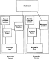

by Abraham Kandel
CRC Press, CRC Press LLC
ISBN: 084934297x Pub Date: 11/01/91
|
|
Fuzzy Expert Systems
by Abraham Kandel CRC Press, CRC Press LLC ISBN: 084934297x Pub Date: 11/01/91 |
| Previous | Table of Contents | Next |
Lawrence O. Hall
Abraham Kandel
Expert systems are computer programs that emulate the reasoning process of a human expert or perform in an expert manner in a domain for which no human expert exists. They typically reason with uncertain and imprecise information. There are many sources of imprecision and uncertainty. The knowledge that they embody is often not exact in the same way that a human’s knowledge is imperfect. The facts or user-supplied information is also uncertain.
An expert system is typically made up of at least three parts: an inference engine, a knowledge base, and a global or working memory. The knowledge base contains the expert domain knowledge for use in problem solving. The working memory is used as a scratch pad and to store information gained from the user of the system. The inference engine uses the domain knowledge together with acquired information about a problem to provide an expert solution.
Expert systems have modeled uncertainty and imprecision in various ways. MYCIN32 uses certainty factors, while CASNET36 uses the most significant results of tests. Most of the methods of dealing with uncertainty and imprecision in expert systems have been ad hoc, in the sense that there is no underlying theory to support them. They have been validated only via empirical testing.
They typically use some form of high level rules. Blind search of the solution space is avoided and high performance, approaching or surpassing an expert’s, is obtained. Reasoning can be done by symbol manipulation. They show some intelligence. Expert systems embody fundamental domain principles and weak reasoning methods. They have difficulty or complexity associated with them. They can reformulate a problem and some reason about themselves. They can be described as computer programs that use domain knowledge and reasoning techniques to solve problems normally requiring a human expert for their solution. Expert systems may perform a task that humans do not normally perform, such as missile guidance or planning for a robot. An expert system may be able to perform expertly in an area in which there are no human experts.
In addition to the three basic components, most expert systems also include an explanation facility. Some expert systems have separate natural language generation and/or interpretation facilities. Some expert systems have interfaces to mechanical devices, such as an expert system to monitor the performance of a nuclear reactor. Others do very basic learning about their domain. They may have several knowledge sources. A knowledge source is made up of at least the three basic parts mentioned before. Knowledge sources communicate with each other and with the overall system controller via a device called the blackboard. Messages are posted and received via this blackboard. The information on a blackboard may cause processes to be activated or be used in some other manner. A possible configuration of an expert system is shown in Figure 1.
A blackboard may be looked at as a communications coupling device. It provides for loose coupling between several knowledge sources in an expert system. Each knowledge source may be viewed as an individual expert. Therefore, an expert system of several knowledge sources is made up of a set of cooperating experts. The experts communicate by writing messages on the blackboard and reading messages from it. A blackboard has a loose resemblance to a mailbox in classical message-passing systems.
One important feature that many expert systems incorporate is that of the explanation facility. This facility enables the expert system to explain its reasoning to the user. The user of the system will be able to trace the knowledge used by the system and, in some cases, determine the motivation for a question that the system has asked. An explanation facility enables a user to determine why information is being asked for and how both intermediate and final conclusions are obtained. It is a very important facility to have when the knowledge base is being debugged. It enables inconsistencies, errors, and omissions to be easily identified for correction.

Figure 1 A two knowledge source expert system.
A consultation expert system that does not have an explanation facility has little chance of being accepted by experts. They will need to know how a conclusion is arrived at, as well as what the reasoning is behind the intermediate steps. An expert system which gives advice to a human must be able to satisfy any misconceptions or skepticisms. There are expert systems which do not need an explanation facility such as Macsyma, which solves calculus and algebra problems. However, most interactive expert systems will need some explanation ability to gain user acceptance.
In order to understand the functioning of an expert system one must see how knowledge is represented in the knowledge base. It is also necessary to understand how the inference engine makes use of the knowledge to come to expert conclusions. Knowledge representation and the inference process will be the subjects of the following sections.
| Previous | Table of Contents | Next |
){kind=link}